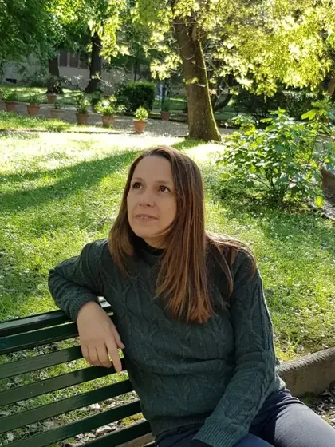
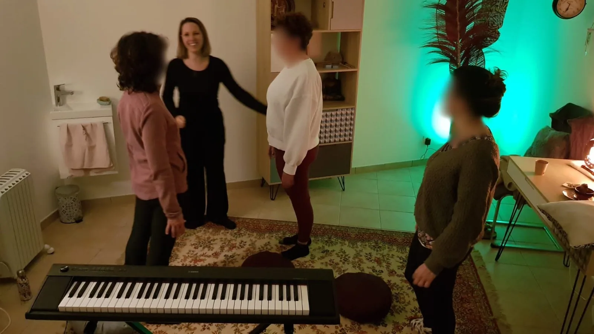

Sortir d'une relation toxique
Tu vis ou tu sors d'une relation marquée par l'emprise, la dépendance affective, le harcèlement conjugal. Tu as perdu confiance en ton ressenti. Je t'accompagne pour retrouver ta clarté et ta force.
Le harcèlement et l'emprise brisent les repères intérieurs. Guérir ses blessures invisibles et réapprendre à se faire confiance en même temps est un chemin difficile à parcourir seule.
Voix Sana t'offre un espace sécurisé pour te libérer du poids d'une relation toxique ou du harcèlement. Sonia Maïolino, thérapeute holistique, t'accompagne vers ta reconstruction.

Le chemin de la reconstruction consiste à retrouver ton authenticité par la voix. En vibrant juste, tu révèles ta nature profonde.
Tu vis ou tu sors d'une relation marquée par l'emprise, la dépendance affective, le harcèlement conjugal. Tu as perdu confiance en ton ressenti. Je t'accompagne pour retrouver ta clarté et ta force.
Mobbing, harcèlement moral au travail, burn-out. Tu t'es perdue dans un système qui t'a abîmée. Je t'accompagne pour retrouver ton ancrage et ta légitimité.
Une vie qui ne te ressemble plus, des valeurs étouffées, un sentiment de désalignement diffus. Je t'accompagne pour renouer avec ce qui te fait vibrer profondément.
Voix Sana est une pratique thérapeutique qui utilise la voix - le souffle, le son, l'expression du ressenti - comme outil de libération. Là où la parole est souvent bloquée par le traumatisme, la voix accède à des couches plus anciennes de notre mémoire corporelle, et permet de libérer ce qui s'est figé.
Aucun talent vocal n'est requis. Il ne s'agit pas de chanter, mais de retrouver le son juste - celui qui dit qui tu es vraiment, celui que tu as appris à étouffer pour survivre dans un environnement toxique.
La pratique se déroule en séances individuelles ou en petit groupe de 3 femmes, à Antibes ou en visio. Chaque séance est un espace sécurisé où tu peux explorer ta voix sans jugement.
Voix Sana est une thérapie holistique qui permet par la voix de libérer ses blocages, qu'ils soient physiques, psychologiques ou émotionnels. La personne qui viendra me consulter va me guider par ses vibrations vocales et je vais pouvoir l'accompagner dans la recherche de ses tensions, et ensuite vient le moment de la connexion à sa force intérieure — ça peut être son authenticité, sa puissance féminine.
Voix Sana s'adresse essentiellement aux femmes brisées, et plus particulièrement les femmes qui ont subi une relation toxique ou du harcèlement.
Avec Voix Sana on recherche l'authenticité, et bien souvent avec la technique on masque cette authenticité. Il ne s'agit pas de savoir chanter, mais de vibrer juste.
Dans les séances individuelles, l'accompagnement est sur mesure. La personne va rechercher d'une manière active ses blocages pour ensuite les libérer. Dans une séance collective on bénéficie d'un dynamisme de groupe qui peut être très galvanisant — il y a une bienveillance incroyable et un soutien.
Je suis Sonia. J'ai créé Voix Sana parce que j'ai vécu, moi aussi, l'enfermement d'une relation toxique. J'ai connu la perte de soi, le doute permanent, la difficulté à reprendre la parole - au sens propre comme au figuré.
Sur mon chemin de reconstruction, j'ai découvert le pouvoir de la voix. Pas la voix qu'on entraîne pour bien chanter, mais la voix qu'on libère pour redevenir soi-même. C'est cette pratique que je transmets aujourd'hui aux femmes que j'accompagne.
J'accompagne mes clientes sur la durée, à leur rythme, sans engagement de forfait - parce que la reconstruction ne se commande pas, elle se construit. Chaque parcours est unique, et c'est dans la régularité, séance après séance, que la transformation s'installe.

Quelques voix de femmes qui ont traversé Voix Sana.
"J'ai l'impression d'avoir récupéré une part de moi et de me sentir aujourd'hui plus pleine et plus entière, moi-même."
— Stéphanie, après une séance Voix Sana
J'ai vécu une expérience de Voix Sana avec Sonia. Je ne savais pas du tout en quoi consistait cette séance et Sonia a une présence, une bienveillance et une justesse très accompagnante qui m'a mise vraiment en confiance. Ça m'a permis de lâcher prise et de me laisser guider, à explorer à l'intérieur de moi, à travers ma voix et mon souffle, différents niveaux de présence dans mon corps et d'aller rencontrer un endroit qui était inconfortable, une zone de blocage. Et grâce à l'accompagnement de Sonia, j'ai pu dépasser ce blocage, ouvrir cet espace, ouvrir cette porte et ça a été une immense libération. J'ai l'impression d'avoir récupéré une part de moi et de me sentir aujourd'hui plus pleine et plus entière, moi-même. Je remercie vraiment Sonia parce que son accompagnement est d'une qualité magnifique et c'est vraiment une magicienne de l'âme et de l'être. Merci vraiment Sonia pour cet accompagnement, qui me donne vraiment envie d'aller plus loin dans cette expérimentation.
"Elle a réussi à créer un climat de confiance qui a fait que j'ai pu vraiment sortir toutes les vibrations, les choses qui venaient de très loin."
— Juliette, après une séance Voix Sana
J'ai reçu un soin à Voix Sana par Sonia et c'était assez fou parce qu'en fait j'étais bloquée au niveau de ma voix, j'arrivais pas à avoir confiance quand je chantais. Et j'ai vraiment ressenti mes vibrations très fortes lorsque j'ai reçu ce soin. Je me suis sentie vachement en confiance avec Sonia qui a suivi pas à pas, puisque j'étais vraiment bloquée, j'arrivais pas du tout à sortir de son. Et elle a réussi à créer un climat de confiance qui a fait que j'ai pu vraiment sortir toutes les vibrations, les choses qui étaient assez fortes qui venaient de très loin. Et je la remercie pour ça parce que moi-même je donne des soins énergétiques et il se trouve que pas longtemps après j'ai pu faire un soin avec ma voix, j'ai eu le courage de pouvoir proposer cette voix-là et ça a fait beaucoup de bien à la patiente que j'avais. Donc merci Sonia, merci pour ta pratique, merci de ta bienveillance et ta douceur.
"J'ai senti toutes mes cellules vibrer — et c'est une sensation que j'ai gardée jusqu'au lendemain."
— Stéphanie, après une séance Voix Sana
Bonjour, je suis Stéphanie et je voudrais vous parler de ma séance de Voix Sana avec Sonia. Ça a été un moment d'immersion dans ma voix que j'ai découverte. J'ai réalisé que je pouvais aller dans des tonalités que je n'imaginais pas avec des ressentis liés justement à ces différentes tonalités. Donc j'ai ressenti des vibrations dans mon corps, j'ai senti toutes mes cellules vibrer et c'est une sensation que j'ai gardée jusqu'au lendemain. Je me suis sentie traverser ces différentes émotions et puis parfois comme une libération en fait, des instants un peu suspendus. Je me sentais vraiment bien et ça m'a ouvert un champ des possibles en me rendant compte qu'il y avait quelque chose qui sortait de moi que je n'imaginais pas, et que j'ai tout ce potentiel créatif en fait. Donc je vous encourage à aller vivre une séance de Voix Sana avec Sonia parce que c'est une façon d'aller découvrir une nouvelle facette de soi et ça fait du bien. Merci Sonia.
Pas de forfait, pas de contrat d'engagement. Tu réserves chaque séance selon ton rythme et ton besoin. La régularité (1 à 2 séances par mois) permet à la transformation de s'installer dans la durée.
Réserve un appel découverte gratuit de 30 minutes. On échange sur ta situation, ce que tu cherches, et je te dis honnêtement si Voix Sana peut t'apporter ce dont tu as besoin.
Réserver un appel découverte80 €
Prendre rendez-vous70 €
Réserver ma placeOui. Le doute est souvent le premier signe. Le questionnaire « Ta relation est-elle toxique ? » est conçu précisément pour t'aider à mettre des mots sur ce que tu vis, sans engagement.
Chaque parcours est unique. En moyenne, mes clientes viennent régulièrement (1 à 2 séances par mois) pendant 6 à 12 mois. Il n'y a pas d'engagement minimum : tu viens à ton rythme, tu arrêtes quand c'est juste pour toi.
Une séance dure 1h en individuel ou 2h en collectif. Nous travaillons par la voix - sons, souffle, expression du ressenti - pour libérer ce qui s'est figé. Aucun talent vocal n'est requis.
C'est normal au début. Les séances collectives sont en petit groupe de 3 femmes, dans un cadre sécurisant. Tu peux commencer par des séances individuelles et rejoindre le collectif quand tu te sens prête.
Voix Sana est complémentaire d'une thérapie verbale. Là où la parole peut être bloquée par le traumatisme, la voix - le son, le souffle - accède à des couches plus anciennes du ressenti et permet de libérer ce qui reste figé.
Oui. Beaucoup de mes clientes viennent justement parce qu'elles n'ont pas encore quitté la relation. L'accompagnement t'aide à retrouver ta clarté et ta force de décision, à ton rythme.
Les séances en visio se déroulent par Zoom, avec la même qualité d'écoute qu'en présentiel. Tu reçois un lien sécurisé avant chaque séance.
Non. Tu réserves chaque séance individuellement via Medoucine. Pas de forfait, pas d'abonnement, pas de contrat. La reconstruction se construit séance après séance, à ton rythme.
Mettre des mots sur ce que l'on vit est souvent le premier pas vers la reconstruction. Ce questionnaire gratuit, confidentiel et sans jugement, est conçu pour t'aider à mieux comprendre la nature de ta relation.
À travers 15 questions, il t'invite à identifier d'éventuels signes de toxicité. Il ne s'agit pas d'un diagnostic, mais d'un outil de prise de conscience qui peut t'aider à déterminer si un accompagnement te serait bénéfique.
30 minutes gratuites pour faire connaissance et voir si Voix Sana est juste pour toi.
Réserver sur MedoucinePour toute question, partage, ou demande d'information.
Envoyer un e-mail